Objekte

The best way to predict the future is to invent it and then encapsulate it in objects.
— Alan Kay
Diese Einheit behandelt Objekte als Entwurfskonzept, noch bevor wir in 06b_Objects die Python-Syntax dazu kennenlernen. Sie lernen, Objekte als Entwurfseinheiten zu verstehen und eine Domäne in Entitäten, Attribute und Verantwortlichkeiten zu zerlegen. Sie halten die Beziehungen zwischen Objekten explizit im Entwurf fest und nutzen das UML-Klassendiagramm sowohl als Entwurfsartefakt als auch als Spezifikation für eine KI. Außerdem unterscheiden Sie Datentypen von Klassen und Funktionen von Methoden.
Das Kapitel folgt diesem Faden: Zuerst klären wir, warum Objekte nötig sind und was Klassen und Instanzen sind. Danach lernen wir mit UML die Sprache kennen, in der Klassen und ihre Beziehungen gezeichnet werden. Zuletzt nutzen wir ein Klassendiagramm als Vorlage für einen KI-Prompt und prüfen das Ergebnis dagegen.
Objekte und Klassen
Objekte als Entwurfseinheiten
Objektorientierte Programmierung (OOP) ist ein Programmierparadigma, das annimmt, dass ein Programm aus Objekten besteht, die miteinander kooperativ interagieren. Jedes Objekt verfügt über Attribute (Eigenschaften) und Methoden (Verantwortlichkeiten).
Objekte sind damit Entwurfseinheiten, die vor dem Code entstehen. Beim Entwurf zerlegt man eine Domäne in Entitäten, etwa ein Gebäude in Etagen, Räume und Fenster, und legt für jede Entität fest, welche Attribute sie hat und welche Verantwortlichkeiten sie übernimmt. Eine Klasse beschreibt Struktur und Verantwortlichkeit einer solchen Entität. Weil Entitäten nicht isoliert sind, müssen auch die Beziehungen zwischen den Klassen ausdrücklich entworfen werden. Das Ziel ist, in Objekten, Beziehungen und Verantwortlichkeiten zu denken.
Die Objektorientierung löst grundlegende Probleme im Umgang mit sich wiederholenden Datenstrukturen in großen Programmen. Diese Probleme entstehen bereits beim Entwurf, nicht erst bei der Implementierung. Wir betrachten drei davon: das syntaktische, das semantische und das Verhaltensproblem.
Das syntaktische Problem
Wächst das Programm an, so wächst auch die Menge der Variablen und Datenstrukturen. Sie dienen dazu, Daten zu speichern, den Programmfluss zu kontrollieren, Zustände abzuspeichern und Ein- und Ausgaben zu verarbeiten. Dabei basieren die zugrundeliegenden Elemente meist auf sich wiederholenden Datenstrukturen. Analysiert man z.B. Baupläne oder Karten, so verwaltet man viele Punkt-Koordinaten. Ohne Festlegung kann eine Koordinate aber unterschiedlich ausgedrückt werden, etwa als Tupel oder als Liste; beide sind möglich und beide liefern denselben Punkt. Das ist das syntaktische Problem. Objekte lösen es, indem sie die Syntax der Datenstruktur verbindlich und eindeutig definieren.
Das semantische Problem
Haben wir uns darauf geeinigt, einen Punkt syntaktisch durch ein Tupel zu repräsentieren, so ist die Bedeutung der Werte dennoch nicht bekannt. Im Tupel (54.083336, 12.108811) bleibt offen, ob der erste Wert die Latitude oder die Longitude ist und ob die Koordinaten kartesisch oder radial gemeint sind. Ein anderer Programmierer wird die semantische Bedeutung der Werte nicht ohne Weiteres verstehen. Um solche Unklarheiten zu beseitigen, will man der Datenstruktur eine klare semantische Definition geben. Objekte lösen das, indem sie Attributnamen vergeben, die die Bedeutung der Werte dokumentieren: punkt_1.latitude und punkt_1.longitude sind selbsterklärend.
Das Verhaltensproblem
Objekte werden zudem verwendet, um die Funktionen zur Verarbeitung der Datenstrukturen direkt mit dieser zu bündeln, so dass die Datenstruktur nur jene Funktionen anbietet, welche auch sinnvoll anwendbar sind. Ohne Objekte kann eine freie Funktion wie distanz(a, b) auf beliebige Daten angewendet werden, auf zwei Punkte genauso wie auf zwei Linien, und niemand prüft, ob die Daten damit verarbeitet werden können. Das führt zu semantischen und logischen Fehlern. Gehört die Operation distanz() dagegen zur Klasse Punkt, so kapselt die Klasse Daten und zulässige Operationen, und die falsche Anwendung wird verhindert.
Objektorientierte Programmierung
Objektorientierte Programmierung ist ein Programmierparadigma, das annimmt, dass ein Programm ausschließlich aus Objekten besteht, die miteinander kooperativ interagieren. Jedes Objekt verfügt über Attribute (Eigenschaften) und Methoden (Verantwortlichkeiten). Die Attribute definieren Werte über den Zustand eines Objektes, die Methoden die möglichen Zustandsänderungen (Handlungen).
Anstatt unübersichtlich viele verstreute Datenstrukturen und Funktionen zu benutzen, gruppieren wir diese in Objekte. Die Struktur dieser Objekte wird in Form von Klassen definiert, die eine Art Bauplan darstellen. Eine Klasse definiert, welche Attribute ein Objekt dieser Klasse besitzt und welche Methoden es bereitstellt. Beides wird zusammen in einer komplexen Datenstruktur gespeichert: Jedes Objekt stellt somit einen zusammengesetzten (komplexen) Datentyp dar.
Klassen als Entwurfseinheiten
Eine Klasse ist der Entwurfsplan für eine Familie gleichartiger Objekte. Sie legt fest, welche Attribute (Eigenschaften) ein Objekt hat und welche Methoden (Operationen) es bereitstellt. Der Entwurf der Klasse kommt vor der Implementierung.
Ein Objekt ist damit ein zusammengesetzter (komplexer) Datentyp, wie wir ihn aus 02b_Datentypen kennen: Es speichert mehrere Werte (Attribute) in einer Struktur. Anders als eine Liste oder ein Tupel bringt es aber auch die dazu passenden Operationen mit. Eine Klasse ist daher ein selbst definierter Datentyp, und eine Methode ist eine Funktion, die zu genau diesem Datentyp gehört.
Klassen und Instanzen
Objekte selbst sind immer Instanzen einer Klasse (die Klasse ist ja nur ein Bauplan). Eine Klasse kann beliebig viele Instanzen haben oder gar keine. Alle Instanzen sind gleich aufgebaut, besitzen aber nicht unbedingt die gleichen Werte in den Attributen.
Die Abbildung zeigt das am Beispiel eines Raums: Die Klasse Raum legt die Attribute name, fläche und höhe sowie die Methode berechne_volumen() fest, enthält aber selbst keine Werte. Die beiden Instanzen r101 (Seminarraum, 48,0 m²) und r102 (Flur, 22,5 m²) sind nach diesem Bauplan gebaut und tragen jeweils eigene Attributwerte. Die gestrichelten Pfeile lesen sich als „ist Instanz von“.
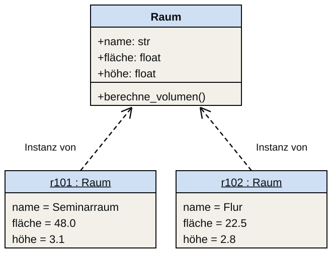
Raum als Bauplan und zwei InstanzenUML-Klassendiagramme
Modellierung mit Objekten
Unsere Wahrnehmung und unser Denken beruhen darauf, Objekte zu erkennen, also etwa einen Stuhl von einem Tisch zu trennen. Das Nachbilden dieser Wahrnehmung im Computer nennt man Modellierung. Weil unsere Wahrnehmung auf Objekten basiert, ist es naheliegend, auch für die Modellierung Objekte zu nutzen. Da die Objekte in der Welt miteinander interagieren, muss auch dieses Verhalten modelliert werden. Ein Modell ist eine abstrakte, vereinfachte Abbildung eines Systems, meist aus der Realität.
Objektorientierter Softwareentwurf
Im objektorientierten Softwareentwurf wird ein Programm so entworfen, dass es nur aus Objekten besteht. Der Softwareentwurf gleicht dabei stark dem Vorgehen von Ingenieuren beim Entwurf von Plänen. Hierbei verwendet man meist die Modellierungssprache UML, mit der Klassen auch visuell entworfen werden können.
Man modelliert im Entwurf,
- wie diese Objekte in Form von Klassen definiert sind,
- welche Attribute und Methoden sie besitzen,
- wie diese Klassen aufeinander aufbauen (Vererbung),
- wie sie miteinander in statischer Beziehung stehen (Assoziation, Aggregation, Komposition)
- und wie sie dynamisch interagieren (Verhalten).
In diesem Kurs nutzen wir UML-Klassendiagramme als Brücke zwischen Anforderung und KI-Prompt: Wer sein Klassenmodell als UML zeichnen kann, kann es auch in einen präzisen Prompt übersetzen. Wie das geht, zeigt der Abschnitt Agentischer Objektentwurf.
UML — Entwurfssprache für Software
Die Unified Modelling Language (UML) ist ein ISO-Standard zur Beschreibung von Softwareentwürfen. Sie wird für Entwurf, Ausschreibung, Implementation und Dokumentation von Funktionalitäten, Strukturen, Businessprozessen und Nutzerinteraktionen genutzt. Der Standard umfasst in der aktuellen Version UML 2.5 vierzehn Diagrammtypen. Die typischsten sind Klassendiagramme für die Klassen- und Datenstruktur, Aktivitätsdiagramme für Abläufe und Algorithmen (verwandt mit den Programmablaufplänen aus 04b_Programmablauf), Sequenzdiagramme für Interaktionen und Use-Case-Diagramme für Nutzer und Nutzfälle.
Klassen, Attribute und Methoden
Eine Klasse ist in UML ein Viereck mit drei Ebenen. In der ersten Ebene steht der Klassenname. In der zweiten Ebene werden alle primitiven Attribute der Klasse aufgelistet (die keine Referenzen darstellen). Die dritte Ebene enthält alle Methoden der Klasse. Für eine Klasse Point mit den Attributen x und y und der Methode distance() zur Berechnung des Abstands zu einem anderen Punkt sieht die Klasse in UML so aus:
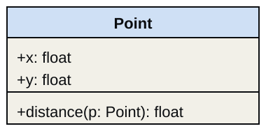
Attribut- und Methoden-Notation
Die abstrakte Schreibweise ist bewusst kompakt. Ein Attribut wird als name: Typ notiert, also zum Beispiel x: float. Eine Methode wird mit Parametern und Rückgabetyp angegeben, etwa distance(p: Point): float.
Bezogen auf die Klasse Point oben bedeutet das: x: float und y: float beschreiben die gespeicherten Koordinaten, während distance(p: Point): float sagt, dass die Methode einen weiteren Punkt als Eingabe erwartet und eine Distanz als Zahl zurückgibt. Genau diese Verdichtung macht UML nützlich: Man sieht die Schnittstelle einer Klasse, ohne schon den Python-Code lesen zu müssen.
Objektbeziehungen
In Programmen stehen Objekte meist im Zusammenhang. Z.B. besteht eine Linie aus zwei Punkten. Diesen Zusammenhang zweier Objekt-Klassen bezeichnet man als Assoziation. Bei stärkerer Bindung spricht man von Aggregation (lose) oder Komposition (untrennbar). Diese Beziehungen müssen im Entwurf explizit festgehalten werden, bevor man sie in Code übersetzt.
Die drei Arten lassen sich an kleinen Beispielen unterscheiden:
Bei der Assoziation verwendet ein Objekt ein anderes, beide bleiben aber unabhängig. Ein
Ingenieurverwendet einWerkzeug; keiner der beiden gehört zum anderen.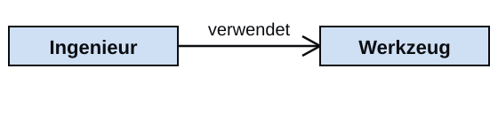
Assoziation: Ingenieur verwendet Werkzeug Bei der Aggregation enthält ein Objekt andere Objekte, die aber auch allein existieren können. Ein
PolygonenthältPunkt-Objekte; Punkte können auch ohne Polygon vorkommen.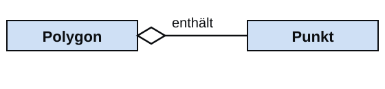
Aggregation: Polygon enthält Punkte Bei der Komposition besteht ein Objekt aus anderen, die ohne das Ganze nicht sinnvoll sind. Eine
Etageist ohne ihrGebäudenicht sinnvoll.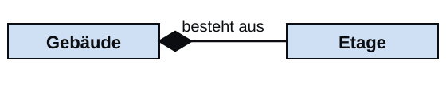
Komposition: Gebäude besteht aus Etagen
Besitzverhältnisse
UML unterscheidet Beziehungen nach ihren Besitzverhältnissen: Ein Objekt kann Teil eines anderen sein und trotzdem ohne dieses existieren (Aggregation), es kann nicht ohne dieses existieren (Komposition), oder beide Objekte sind unabhängig und eines verwendet nur das andere (Assoziation). Für jede Art definiert UML eine eigene Linienform: eine leere Raute für die Aggregation, eine gefüllte Raute für die Komposition und eine einfache Linie oder einen Pfeil für die Assoziation. Die Raute sitzt jeweils beim Ganzen.
Bei der Komposition gibt es zusätzlich eine Lebenszyklus-Abhängigkeit: Wird das übergeordnete Objekt gelöscht, verschwinden auch seine Teile. Ein Room, der nur als Teil eines bestimmten Building existiert, ist ein typisches Beispiel. Bei einer Aggregation kann das Teilobjekt auch unabhängig weiterbestehen.
Die Klasse Line beinhaltet den start- und end-Punkt. Das ist eine Aggregation, weil die Punkte zur Linie gehören, aber auch separat existieren können (wir brauchen keine Linie, um einen Punkt zu definieren). An der Linie steht zusätzlich die Multiplizität: Je 1 Instanz von Line gehören genau 2 Instanzen von Point.
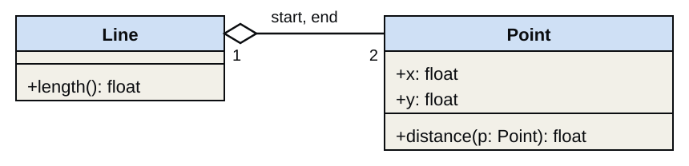
Multiplizität
Die Multiplizität beschreibt, wie viele Objekte an einer Beziehung beteiligt sind. Sie beantwortet also Fragen wie: “Hat eine Linie genau zwei Punkte?” oder “Kann ein Raum beliebig viele Fenster haben?”
Die gängigen Notationen sind 1 (genau eins), 0..* (null oder mehr), 1..* (ein oder mehr) und 0..1 (keins oder eins). Im Entwurf klärt man damit drei Fragen: in welche Richtung die Beziehung gilt, wie viele Objekte beteiligt sind und wer von wem abhängt.
Im Beispiel Line–Point oben liest man: Eine Linie steht mit genau zwei Punkten in Beziehung, nämlich Start- und Endpunkt. Die Gebäudekette liest sich genauso: Ein Gebäude besteht aus mindestens einer Etage (1..*), jede Etage aus mindestens einem Raum, und ein Raum enthält null oder mehr Fenster (0..*). Die gefüllten Rauten markieren Kompositionen, die leere Raute beim Raum eine Aggregation.
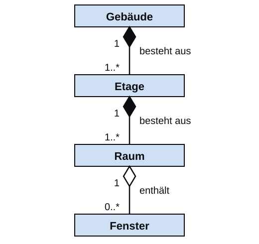
Diese Information ist für die Implementierung wichtig, weil sie vorgibt, ob wir in Python ein einzelnes Attribut, eine optionale Referenz oder eine Liste von Objekten benötigen.
Kapselung, Vererbung, Polymorphismus
Zur Objektorientierung gehören nicht nur Klassen und Beziehungen, sondern auch Kapselung, Vererbung und Polymorphismus. Alle drei sind Entwurfsentscheidungen, die man im Klassendiagramm festhält.
Kapselung
Kapselung bedeutet, dass Daten und die für sie sinnvollen Operationen gemeinsam entworfen werden und der Zugriff bewusst geregelt wird. Nicht jedes Attribut soll von außen beliebig änderbar sein. UML markiert die Sichtbarkeit vor dem Namen eines Attributs oder einer Methode: + für öffentlich, # für geschützt und - für privat.
Polymorphismus
Polymorphismus bedeutet, dass verschiedene Klassen dieselbe Verantwortlichkeit anbieten können, aber jeweils unterschiedlich umsetzen. Die Methode fläche() gibt es bei Rechteck und bei Kreis, doch die Berechnung unterscheidet sich. Das ist wichtig für austauschbare Objekte, die dasselbe Interface anbieten.
Vererbung
Vererbung beschreibt, dass eine speziellere Klasse Eigenschaften und Verantwortlichkeiten einer allgemeineren Klasse übernimmt. Gleichartige Objekte teilen oft dieselben Eigenschaften und Methoden. Damit man diese nicht in jeder Klasse neu definieren muss und dabei Fehler macht, gibt es die Vererbung: Eine spezialisierte Unterklasse besitzt alle Attribute und Methoden ihrer generalisierten Oberklasse (Basisklasse) und ergänzt nur, was sie besonders macht. Im Beispiel unten erbt Serverraum von Raum den Namen, die Fläche und berechne_volumen() und ergänzt die kühlleistung.
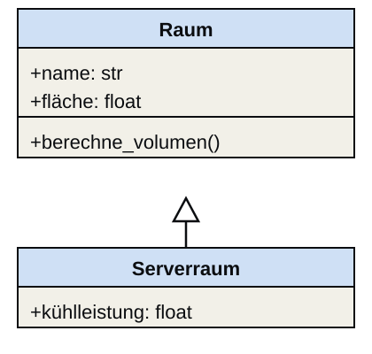
Serverraum ist ein spezieller RaumDie Vererbung wird in UML durch eine Linie mit einem nicht ausgefüllten (weißen) Dreieck bei der Oberklasse gezeichnet (es ist kein Pfeil). Zurück zur Hörsaalfrage: Alle dort gezeigten Elemente bestehen aus Punkten, die mit Linien verbunden sind. Um auszudrücken, dass Triangle, Tetragon und Pentagon Unterklassen des Polygons sind, zeichnen wir:
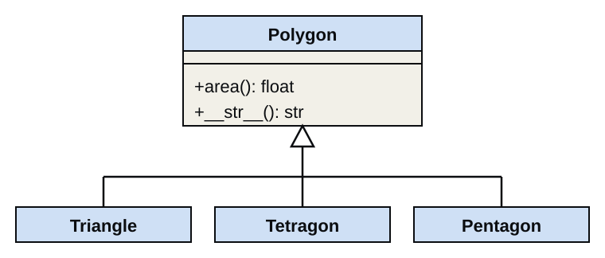
Fügen wir die einzelnen Elemente zusammen, so sieht das UML-Diagramm unseres Klassenmodells wie folgt aus. Ein Polygon besteht aus mindestens drei Punkten (3..*), eine Linie aus genau zwei:
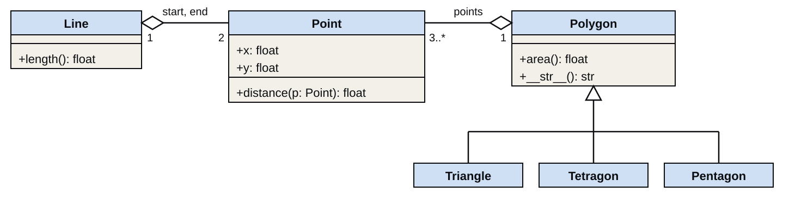
Auf Basis dieses UML-Diagramms würde ein Programmierer die Zusammenhänge der Klassen verstehen und könnte diese entsprechend implementieren. Klassendiagramme eignen sich besonders gut, um solche Datenstrukturen zu definieren und zu kommunizieren.
Dieses Modell können wir weiter verfeinern und spezifischere Klassen für Dreiecke einführen: rechtwinklige (Right), stumpfwinklige (Obtuse) und spitzwinklige (Acute) Dreiecke, die jeweils auch gleichschenklig (Isosceles…) sein können; ein gleichschenklig-spitzwinkliges Dreieck kann zudem gleichseitig (Equilateral) sein. Genauso können wir Vierecke in Trapeze (Trapezoid), Parallelogramme und Drachen (Kite) einteilen, mit den Spezialisierungen Rechteck (Rectangle), Quadrat (Square) und Raute (Rhombus).
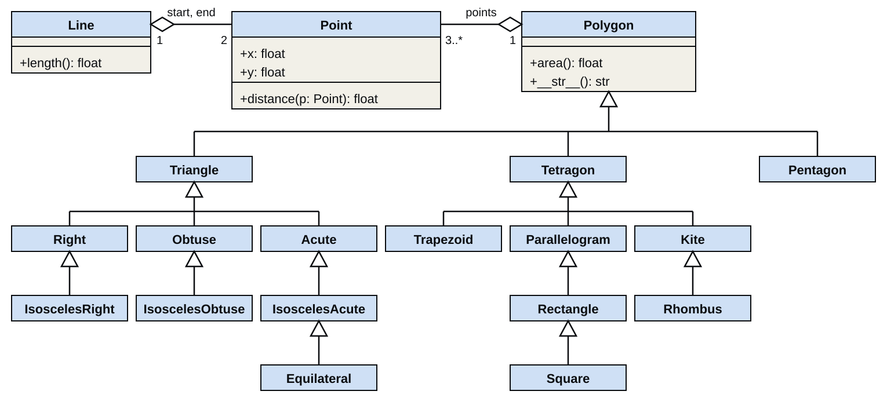
Jede Instanz dieser speziellen Klassen erbt dabei die Methoden area() und __str__(). Mit der einen generischen Implementierung von area() für ein Polygon ist die Flächenberechnung aller dieser Grundelemente abgedeckt, ohne eine weitere Zeile Code für sie schreiben zu müssen.
Eine reine Baumstruktur vereinfacht dabei: Ein Quadrat ist geometrisch sowohl ein Rechteck als auch eine Raute, kann hier aber nur von einer Klasse erben. Entlang der Hierarchie könnte man weitere Attribute und Methoden definieren, die etwa prüfen, ob Punkte, Linien und Winkel die Bedingungen der jeweiligen Klasse erfüllen. Das geht jedoch über dieses Beispiel hinaus.
Brücke zu Python: self
Im UML-Diagramm sprechen wir abstrakt über eine Klasse und ihre Verantwortlichkeiten. In Python muss eine Methode jedoch auf eine konkrete Instanz zugreifen können. Dafür gibt es self: Die Selbst-Referenz auf genau das Objekt, dessen Methode gerade ausgeführt wird. In 06b_Objects wird daraus dann die konkrete Syntax mit class, __init__ und self.attributname.
Agentischer Objektentwurf
Design before you prompt
Der agentische Ansatz für Objektorientierung bedeutet: zuerst entwerfen, dann prompten. Das UML-Klassendiagramm ist die Spezifikation, die wir der KI übergeben; der Code ist das Ergebnis. Daraus ergibt sich derselbe Zyklus wie in 03c_Softwareentwurf und 03d_AgentischesProgrammieren:
- Prompt: Das Diagramm geht als Spezifikation an die KI.
- Generate: Die KI erzeugt die Python-Klasse.
- Verify: Der Code wird gegen das Diagramm geprüft.
- Iterate: Abweichungen schärfen Diagramm und Prompt nach, und der Zyklus beginnt von vorn.
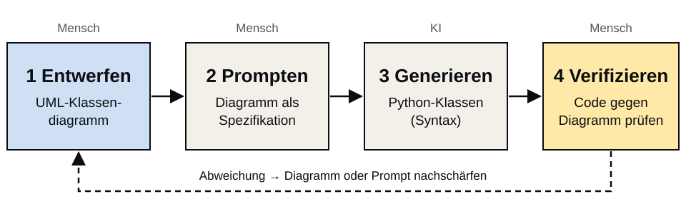
Der Entwurf des Diagramms ist dabei der eigentliche Ingenieurschritt, denn er legt fest, was die KI umsetzen soll. Diesen Zyklus zu beherrschen, ist die Kernkompetenz des agentischen Programmierens für Objekte.
UML-Diagramm als KI-Prompt
Ein UML-Klassendiagramm, das einer KI als Prompt übergeben wird, muss vollständig sein: Klassennamen, Attribute mit Typen, Methoden mit Parametern und Rückgabetypen, Beziehungen mit Richtung und Multiplizität. Für unser Raum-Beispiel heißt das: Nicht nur der Klassenname, sondern auch name: str, fläche: float, höhe: float und berechne_volumen() -> float müssen explizit genannt sein. Aus dem Diagramm formulieren wir dann einen präzisen Prompt, der die KI anweist, genau diese Spezifikation umzusetzen. Was nicht im Diagramm steht, wird die KI erfinden — und das oft falsch.
Für das Beispiel sieht das Diagramm so aus:
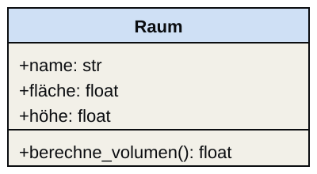
RaumDaraus entsteht ein Prompt, der nur die Elemente des Diagramms nennt und der KI ausdrücklich verbietet, etwas hinzuzuerfinden:
Implementiere die Klasse Raum. Attribute: name: str, fläche: float, höhe: float. Methode: berechne_volumen() -> float. Erfinde keine weiteren Attribute.
Verifizieren gegen das Diagramm
Die Verifikation ist der entscheidende Schritt im agentischen Workflow. Wer nur den generierten Code liest, ohne gegen das Diagramm zu prüfen, übersieht fehlende Attribute, falsche Beziehungstypen oder falsch typisierte Rückgabewerte. Wenn die KI z.B. eine Klasse Raum ohne berechne_volumen() oder ohne die Beziehung zu Fenster erzeugt, ist nicht “fast richtig”, sondern unvollständig. Das Diagramm ist das Kriterium — nicht das eigene Bauchgefühl. Erst wenn Code und Diagramm übereinstimmen, ist der Entwurf korrekt umgesetzt.
Die Prüfung läuft in vier Schritten: Man liest die generierten Klassen gegen das UML-Diagramm, prüft, ob alle Attribute vorhanden und korrekt benannt sind, prüft, ob alle Beziehungen korrekt umgesetzt sind, und ergänzt bei Abweichungen das Diagramm, bevor man erneut promptet.
Ein Beispiel: Die KI liefert für die Klasse Raum den folgenden Code.
class Raum:
def __init__(self, name, fläche, höhe):
self.name = nameGegen das Diagramm geprüft ergibt sich: name ist vorhanden, aber der Typ str fehlt. fläche und höhe werden zwar übergeben, aber nicht gespeichert, und berechne_volumen() fehlt ganz. Der Code ist also unvollständig, und Prompt oder Diagramm müssen nachgeschärft werden.
Domänenzerlegung: Gebäude
Die Zerlegung einer Domäne in Entitäten zeigt sich am Gebäude. Die Entitäten sind Gebäude, Etage, Raum und Fenster. Zwischen Gebäude, Etage und Raum besteht jeweils eine Komposition, zwischen Raum und Fenster eine Aggregation. Attribute und Methoden stehen bereits im Diagramm und nicht erst im Code.

Ein typisches BIM-Modell lässt sich als Objekthierarchie ausdrücken: Gebäude → Etage → Raum → Fenster. Jede Klasse hat eigene Attribute (z.B. Raum.fläche, Fenster.u_wert) und eigene Verantwortlichkeiten (z.B. Etage.berechne_gesamtfläche()). Die Beziehungen — Komposition, Aggregation — müssen im Entwurf mit Multiplizitäten explizit festgehalten werden.
Für das Fenster werden die Attribute breite: float, höhe: float und u_wert: float modelliert. So wird klar, warum Fenster.u_wert im späteren Code oder in Berechnungen überhaupt vorkommt. Der Entwurf benennt also nicht nur die Objekte, sondern auch die fachlich relevanten Eigenschaften jeder Klasse.
Anforderung, UML, KI-Prompt und Code
Dieses Beispiel führt den vollständigen agentischen Workflow durch: von einer natürlichsprachlichen Anforderung über ein UML-Klassendiagramm zu einem KI-generierten Python-Programm. Die Verifikationsphase zeigt, wie man prüft, ob der generierte Code das Diagramm korrekt umsetzt.
Schritt 1: Anforderung formulieren
Der Auftraggeber beschreibt das Problem in seiner Fachsprache. Für den Entwurf stellt die Ingenieurin oder der Ingenieur vier Fragen an diesen Text: Welche Klassen, welche Attribute mit welchen Typen, welche Methoden mit welchen Signaturen und welche Beziehungen zwischen den Klassen gibt es?
Schritt 2: Anforderung → UML
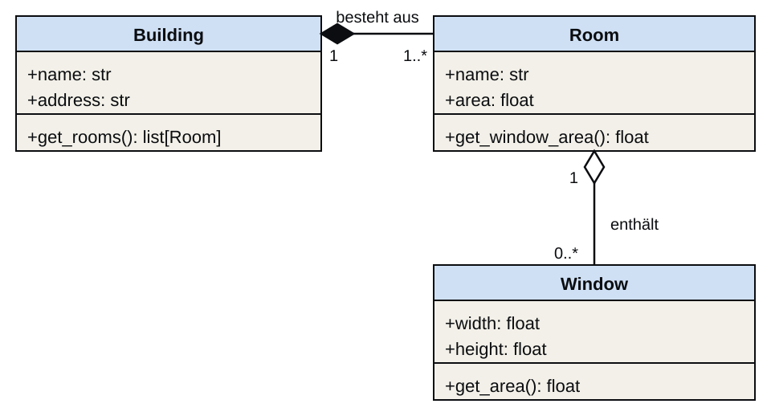
Das UML-Klassendiagramm identifiziert drei Klassen: Building, Room und Window. Sie ergeben sich direkt aus den Sätzen der Anforderung:
- Aus “Ein Gebäude hat mehrere Räume” folgt die Klasse
Buildingmit einer Komposition zuRoom: Ein Raum existiert nicht ohne sein Gebäude. - Aus “Jeder Raum hat einen Namen, eine Fläche und eine Liste von Fenstern” folgt die Klasse
Roommit den Attributennameundareaund einer Aggregation zuWindow. - Aus “Ein Fenster hat eine Breite und Höhe” folgt die Klasse
Windowmit den Attributenwidthundheight.
Die geforderte Berechnung “Gesamtfensterfläche eines Raumes” wird zur Methode get_window_area() in Room; sie stützt sich auf get_area() in Window. Die Adresse des Gebäudes steht nicht in der Anforderung; sie ist eine Entwurfsentscheidung, die man mit dem Auftraggeber abstimmen sollte. UML macht hier sichtbar, wie natürliche Sprache systematisch in Klassen, Attribute, Methoden und Beziehungen übersetzt wird.
Schritt 3: UML → KI-Prompt → Verifizieren
Aus dem UML-Diagramm kann nun ein präziser KI-Prompt formuliert werden. Ein mögliches generiertes Python-Ergebnis wäre:
class Window:
def __init__(self, width: float, height: float):
self.width = width
self.height = height
def get_area(self) -> float:
return self.width * self.height
class Room:
def __init__(self, name: str, area: float, windows: list[Window] | None = None):
self.name = name
self.area = area
self.windows = windows or []
def get_window_area(self) -> float:
return sum(window.get_area() for window in self.windows)
class Building:
def __init__(self, name: str, address: str, rooms: list[Room]):
self.name = name
self.address = address
self.rooms = rooms
def get_rooms(self) -> list[Room]:
return self.roomsDie Verifikation erfolgt anschließend nicht “nach Gefühl”, sondern Punkt für Punkt gegen das UML-Modell:
Window,RoomundBuildingsind alle vorhanden.- Die Attribute
width,height,name,area,addressundroomsentsprechen dem Diagramm. Window.get_area(),Room.get_window_area()undBuilding.get_rooms()setzen die geforderten Methoden um.- Die Beziehungen sind im Code als Listen von Referenzen realisiert:
Buildingenthältrooms,Roomenthältwindows. - Die Multiplizität wird nur angenähert: Ein
Roomkann null oder mehr Fenster besitzen, das passt. FürBuildingfordert das Diagramm mindestens einen Raum; der Code akzeptiert aber auch eine leere Liste. - Die Komposition wird ebenfalls nur angenähert: Die Räume werden außerhalb erzeugt und dem Gebäude übergeben, sie können also auch ohne Gebäude existieren.
Die letzten beiden Punkte sind typische Abweichungen, die man nur findet, wenn man gegen das Diagramm prüft. Ob sie behoben werden müssen, entscheidet der Entwurf, nicht die KI.
Praxisbezug: BIM und IFC
Das Beispiel ist nicht künstlich: In realen BIM-Workflows werden Gebäude als objektorientierte Modelle beschrieben. Der Standard IFC (Industry Foundation Classes) enthält Klassen, Eigenschaften und Beziehungen für Bauteile, Räume, Öffnungen oder technische Anlagen.
Darum sind UML, Vererbung und Referenzen hier nicht nur Lehrbuchstoff, sondern direkte Vorbereitung auf Praxisdatenmodelle. Wer kleine Klassendiagramme lesen und entwerfen kann, versteht später auch, warum große BIM-Modelle strukturiert und nicht nur “gezeichnet” sind.
Querverbindungen
Diese Einheit behandelt nur die Entwurfsseite der Objekte. In 03c_Softwareentwurf haben wir gesehen, warum der Entwurf vor der Implementierung steht. In 06b_Objects folgt die Python-Syntax für dieselben Konzepte: class, __init__, self, Attribute und Methoden. In 08a_UnitTest schließlich prüfen Tests, ob die Python-Implementierung dem UML-Entwurf entspricht.